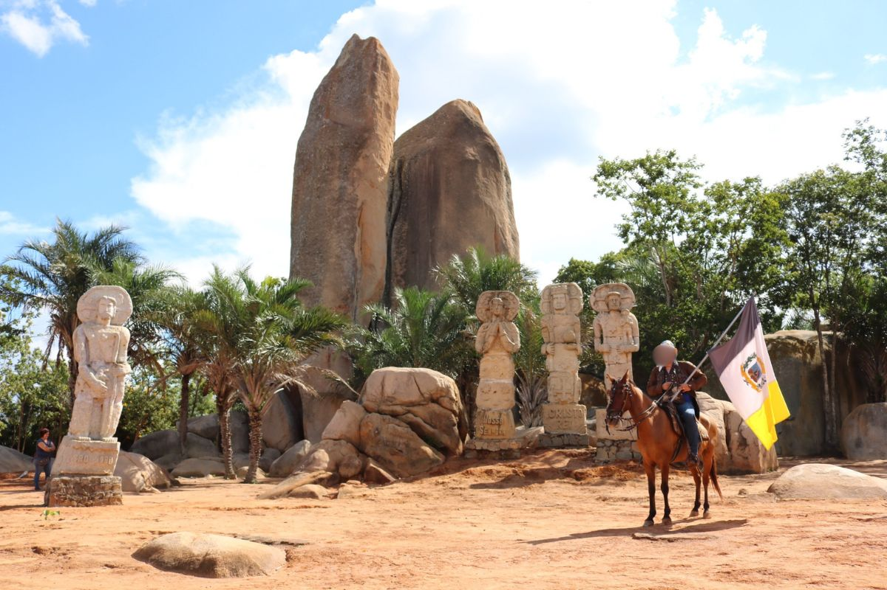

🇧🇷 Português
A Pedra do Reino, ou Pedra Bonita, é um conjunto de duas formações rochosas de cerca de 30 metros de altura, situadas em São José do Belmonte (PE). Tornou-se famosa pelo movimento messiânico sebastianista ocorrido entre 1836 e 1838.
O episódio inspirou diversas obras, como 'O Romance d'A Pedra do Reino' de Ariano Suassuna. Todo ano em maio, ocorre a Cavalgada à Pedra do Reino, celebração ligada à tradição armorial.
🇺🇸 English
The Pedra do Reino, also known as Pedra Bonita, is a pair of rock formations about 30 meters tall, located in São José do Belmonte, Pernambuco. It became famous as the site of a Sebastianist messianic movement between 1836 and 1838.
The episode inspired several works, including Ariano Suassuna’s 'Romance d’A Pedra do Reino'. Every year in May, the Cavalgada to the Pedra do Reino takes place, a celebration linked to the Armorial tradition.